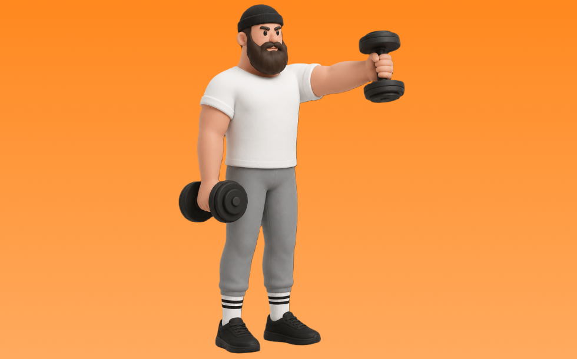

フロントレイズ

フロントレイズとは、ダンベルを使って「腕を前に上げる」動作で肩前部（三角筋前部）を鍛える種目です。可動域が広く、左右のバランスを整えやすいのが特徴で、反動を抑えてコントロールしながら反復します。肩の厚みづくりとオーバーヘッドの押す力の向上が期待できます。
- 対象部位
- 肩
- 器具
- ダンベル
- 記録形式
- 重量・回数
- 別名
- フロントレ
YouTube動画
-
【三角筋前部】フロントレイズ(ダンベル)の正しいやり方 | 『怪我をしにくいダンベルの向き』など初心者向けの解説！
-
【筋トレ】フロントレイズのやり方を解説！サイドレイズにも効果的なポイント
-
【ダンベル肩トレ】肩の筋肉を鍛える筋トレ「フロントレイズ」の正しいやり方
-
【必要? 不要?】三角筋を鍛えるフロントレイズの適切なフォームと注意点
-
【肩トレ】フロントレイズを誰でも簡単に効かせるコツを教えます！
-
【フロントレイズ】肩に効かせるコツをダンベル・バーベル・ケーブルなど器具別に！
-
【筋トレ悪いフォーム解説】三角筋前部狙いなら、フロントレイズはこう鍛える！
-
サイドレイズ正しいやり方とNGフォーム！プロビルダーが教える確実に効く2種目！
-
【肩トレ】本当のフロントレイズのやり方教えます【永久保存版】
-
肩全体に効きまくる！7分間ダンベルトレーニング
-
フロントレイズ｜ダンベルを使った筋トレ【公式】
-
【肩の筋トレ（前側編）】広い肩幅に！フロントレイズのやり方解説～三角筋は分けて鍛えよう！～
-
【筋トレ】絶対に効くフロントレイズの変形版を解説！
-
9割の人が知らないサイドレイズの効かせ方
-
ダンベルだけで“肩が変わる”！初心者・宅トレ向けの基本4種目を紹介
-
【初心者もOK】ジムでのマスト肩トレを解説！
-
【筋トレ】フロントレイズ解説講座 〜三角筋前部を鍛える〜【フォーム】【初心者】
-
【肩トレ】軽いダンベルだけで肩に効く！初心者にもオススメの基本３種目を解説【筋トレ】
-
肩をデカくする超絶筋トレ！バーベルフロントレイズの技術解説！#motivation#筋トレ#トレーニング
-
【ダンベル買ったらコレやるべし】ダンベル定番トレーニングBEST10
YouTubeショート
-
フロントレイズの基本動作 #shorts #持田式 #筋トレ
-
正しいダンベルフロントレイズのやり方
-
#筋トレ #肩#三角筋 #フロントレイズ#マッチョ#workout ■model @ sergiconstance
-
めっちゃ肩がデカくなった今やってるメニュー！#shorts
-
トレーナーが教える筋トレ「フロントレイズ」 【肩/初級】
-
【初心者必見】世界一わかりやすいサイドレイズ#プロテイン #筋肉 #筋トレ初心者 #筋トレ #fitness #肩トレ #サイドレイズ
-
【ダンベル】肩トレ3選 #筋トレ
-
肩の筋肉はこれやっとけばデカくなる。#shorts
-
フロントレイズの正しいやり方 | ボディビル日本チャンピオンが解説 #shorts【ビーレジェンド プロテイン】
-
意味のないトレーニング４選！【筋トレ】
-
バーベルフロントレイズ（Barbell Front Raise）のやり方とフォーム
-
絶対にデカくなるサイドレイズやり方#筋トレ #肩トレ #筋トレ初心者 #shoulderworkout
-
先生!肩をデカくするおすすめの筋トレメニューは？ ＃Shorts #肩トレ
-
肩トレのやり方🔥〜インクラインサイドレイズ基礎編〜 #筋トレ #筋肉 #筋肉社長 #マッチョ #肩トレ
-
マシンを使ったショルダープレスのコツ
-
正しいショルダープレス4つのポイント #筋トレ
-
こんなサイドレイズ今すぐやめて #short #youtubeshorts #プロテイン #筋肉博士 #筋トレ大学 #山本義徳 #サイドレイズ #肩トレ
-
サイドレイズはここを気をつけると全然肩が変わる！ #サイドレイズ #筋トレ #トレーニング
-
肩トレこの3種類で十分やと思うねんけど、マッチョ警察の方々どう思う？
-
ダンベルのみで作る肩トレ教室#筋トレ #gimnastik
-
持田選手にサイドレイズについてレクチャーしていてもらいました！次はどの種目の解説をやってほしいかコメントしてね！#筋トレ #volix #トレーニング #workout #肩トレ #ちょこっと惜しい
-
このサイドレイズはやめろ！#shorts
-
自宅でできる肩トレ4選！
動作方法
- 対象部位の力を抜かずに構える
- 反動を使わず、可動域を丁寧に使う
- 戻し動作をゆっくり行う
動作ポイント
- 可動域を急に狭めない
- 対象部位の緊張を保つ
ワンポイントアドバイス
- 重量よりも肩の軌道を安定させる
- 首まわりの力みを減らして行う
目的別回数設定
目的や体力に応じた一般的な目安です。無理のない範囲で調整してください。
- 筋力アップ
- 1〜5回
- 筋肥大
- 6〜12回
- 持久力アップ
- 13〜20回
YouTube動画について
動画はYouTubeの公開情報をもとに表示しています。内容は投稿者によるもので、Biggrによる監修ではありません。
アプリを入手
筋トレやトレーニングの記録はBiggrにお任せください。今すぐ無料で使い始められます。